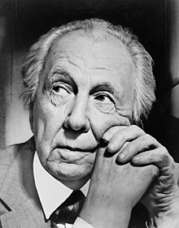

프랭크 로이드 라이트
프랭크 로이드 라이트(Frank Lloyd Wright, 1867년 6월 8일 ~ 1959년 4월 9일)는 미국의 근대 건축가이다.
매우 독특한 양식의 건축 설계로 전 세계적으로 영향을 미쳤다.

프랭크 로이드 라이트의 일생
- 1.프랭크 로이드 라이트는 1867년 미국 위스콘신주 농촌 리치랜드 센터에서 프랭크 링컨 라이트(Frank Lincoln Wright)라는 이름으로 태어났다.
- 2.랭크 로이드 라이트는 매디슨 고등학교에 다녔다. 하지만, 그가 고등학교를 졸업했다는 자료는 남아있지 않다.
- 3.1889년 6월 1일, 라이트는 그의 첫 번째 부인 캐서린 리 "키티" 토빈(Catherine Lee "Kitty" Tobin, 1871년 ~ 1959년)과 결혼한다.
- 3.애들러와 설리번을 떠난 라이트는 시카고 랜돌프 가에 있는 설리번이 디자인한 쉴러 빌딩 최상층에 자신의 건축 사무소를 차렸다.